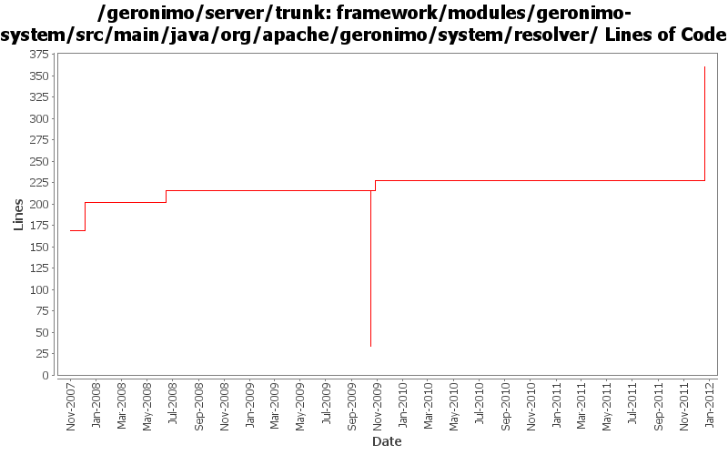

[root]/framework/modules/geronimo-system/src/main/java/org/apache/geronimo/system/resolver

| Author | Changes | Lines of Code | Lines per Change |
|---|---|---|---|
| Totals | 17 (100.0%) | 388 (100.0%) | 22.8 |
| djencks | 13 (76.5%) | 369 (95.1%) | 28.3 |
| gawor | 1 (5.9%) | 15 (3.9%) | 15.0 |
| xuhaihong | 1 (5.9%) | 2 (0.5%) | 2.0 |
| rwonly | 1 (5.9%) | 1 (0.3%) | 1.0 |
| jlaskowski | 1 (5.9%) | 1 (0.3%) | 1.0 |
GERONIMO-6240 Make several base geronimo functions (kernel, deployer, etc) DS services and make the car-maven-plugin take advantage of that. Server assembly doesn't work yet, builds framework.
138 lines of code changed in 4 files:
some codes clean up
1 lines of code changed in 1 file:
GERONIMO-4658 Editor for artifact aliases. original patch from Victor Fang, with modifications. Merge from 2.2 with little attempt to fix problems
13 lines of code changed in 1 file:
GERONIMO-4916 step 2 move sandbox osgi framework into trunk
181 lines of code changed in 2 files:
GERONIMO-4916 step 1 remove old framwork
0 lines of code changed in 2 files:
GERONIMO-4838 Should automatically omit space in artifact_aliases.properties
2 lines of code changed in 1 file:
header fixes (Rev, Date)
1 lines of code changed in 1 file:
fixes for offline deployment (GERONIMO-4072)
15 lines of code changed in 1 file:
GERONIMO-3607 Add 'assemble a server' support to geronimo and use it from car-maven-plugin and gshell. Not yet available in the console. Better repository support would be desirable
37 lines of code changed in 2 files:
GERONIMO-3579 Configure which config.xml and properties files info from the plugin xml goes into
0 lines of code changed in 2 files: